utrechtse desembakkerij
Kom voor het brood, blijf voor het kaneelbroodje.
Bij ons loket in Utrecht liggen de desembroden en kaneelbroodjes klaar, gebakken met Nederlands graan. Neem er koffie bij en blijf nog even zitten.
4,6 sterren uit 41 Google-reviews
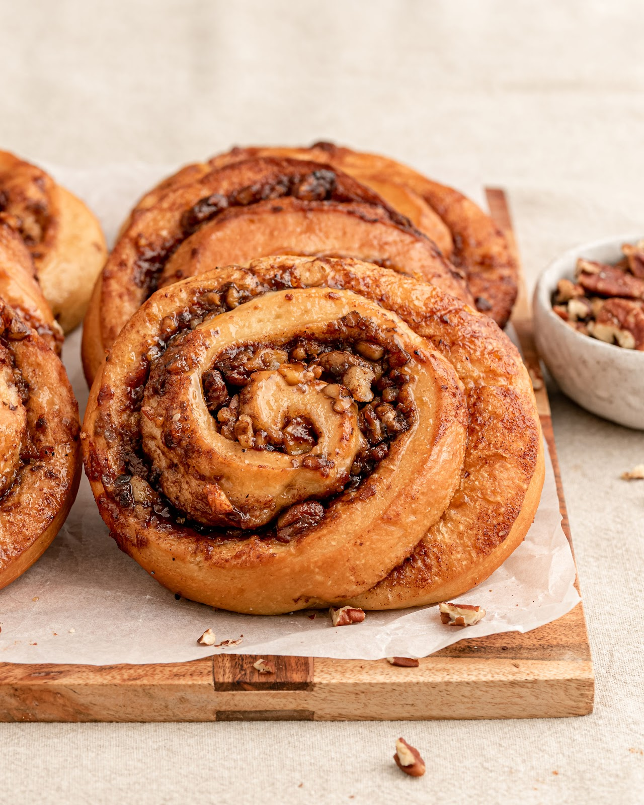
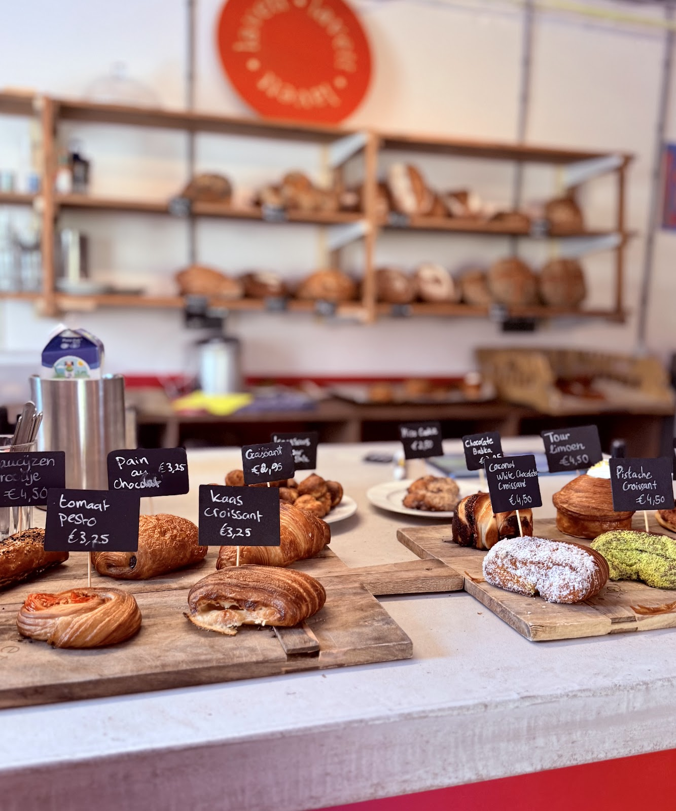
Even langs het loket.
Hier verkopen we al onze broden, kaneel- en kardemombroodjes en alle andere zoetigheden waar we zelf zin in hebben. Er is een kleine lunchkaart, koffie van Dagger uit Utrecht en een plek om lekker te blijven hangen.
Openingstijden
| Woensdag | 08:00 tot 16:00 |
| Donderdag | 08:00 tot 16:00 |
| Vrijdag | 08:00 tot 16:00 |
| Zaterdag | 08:00 tot 16:00 |
| Zondag | 09:00 tot 15:00 |
| Maandag | Gesloten |
| Dinsdag | Gesloten |
Gansstraat 164, 3582 EP Utrecht
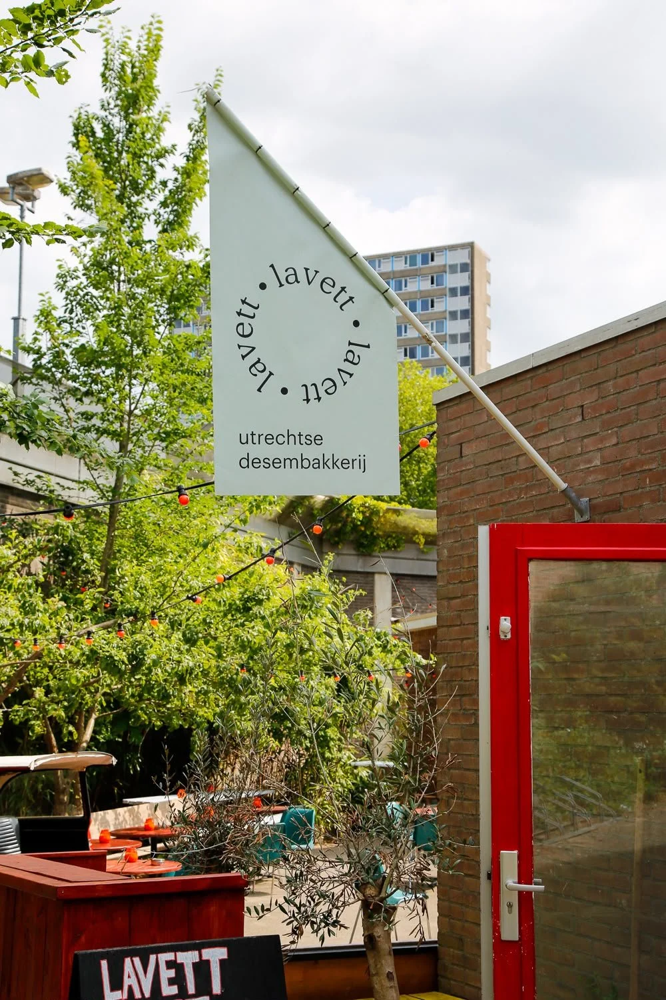
Meer trek? Dan schuif je aan op het terras.
Op zaterdag en zondag vraag je op ons gedeelde terras de lunchkaart op: uitgebreid à la carte of zelfs een 3-gangenlunch. We horen bij elkaar en vullen elkaar lekker aan.
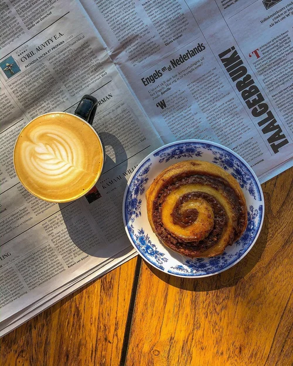
"Lavett is in een woord DEVINE! De plek is een oase op zich waar, je even tot rust kunt komen maar bovendien een plek waarvoor ik graag een stukje fiets omdat het brood en de pastries gewoonweg geweldig zijn."
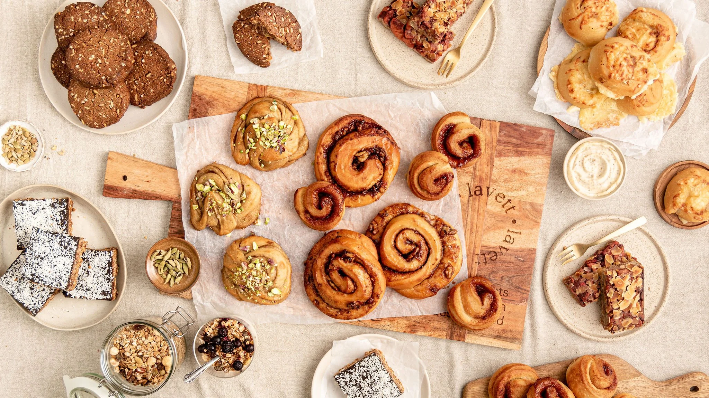
De rolls waar Utrecht ons van kent.
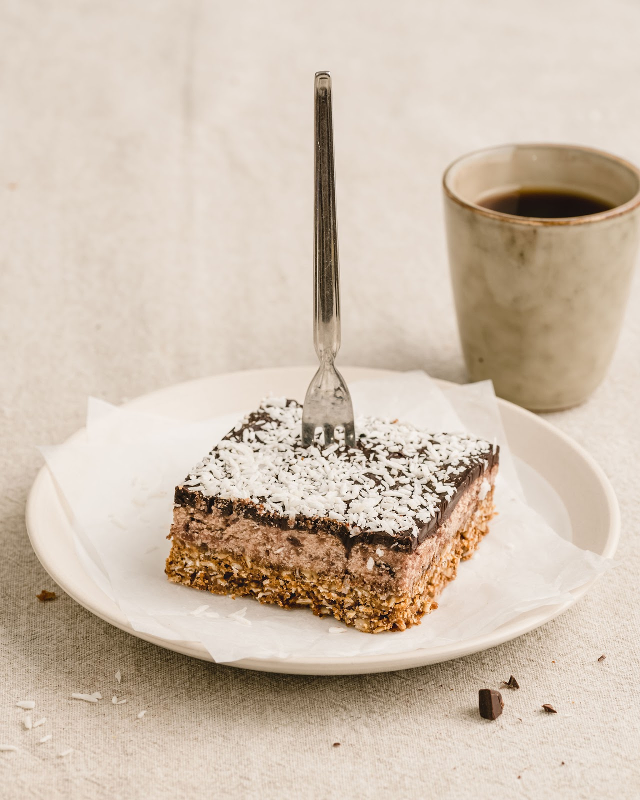
- Cinnamon-roll
- Groot, rijkelijk gevuld met noten en dadels. Bekend in Utrecht en omstreken.
- Kardemombroodje
- Samen met het kaneelbroodje onze hardloper.
- Kaas-ui roll
- Hartig, met biologische kaas.
- Seizoens-roll
- Steeds een nieuwe, met wat het seizoen op dat moment te bieden heeft.
"Beide broodjes waren erg lekker: het brood was vers en knapperig, en de belegging royaal en goed op smaak. Je proeft echt dat er aandacht aan besteed is."
Elk brood zijn eigen desem.
We bakken zonder industriële gist. Elk type brood krijgt zijn eigen desemmethode, en dat proef je: onze volkoren heeft wat zuurdere tonen, ons Lavett-brood smaakt juist vol en granig.
Al onze broden zijn meergranen, met drie of meer meelsoorten. Granen als emmer en boekweit geven rijkere smaak en meer variatie op de akker.
Wat aan het eind van de dag overblijft, gooien we niet weg. Dat gaat naar Too Good To Go.
"Lavett heeft misschien wel het lekkerste brood van Utrecht, echt... De korst van het brood (blond en baguette) is knapperig, de geur van het brood super vers."
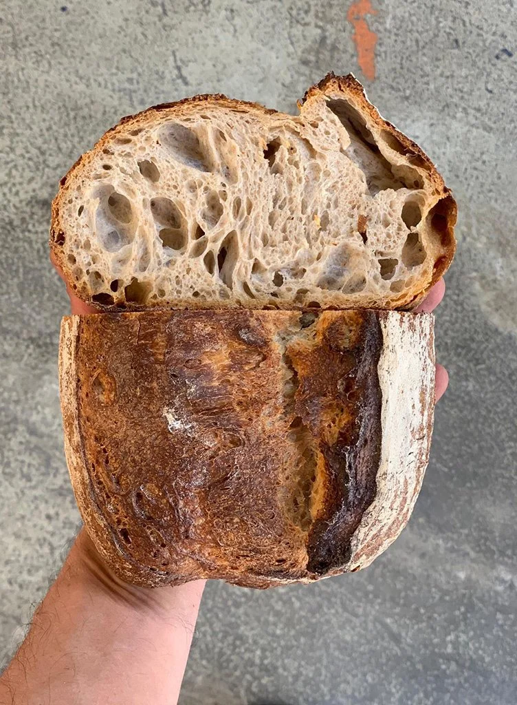
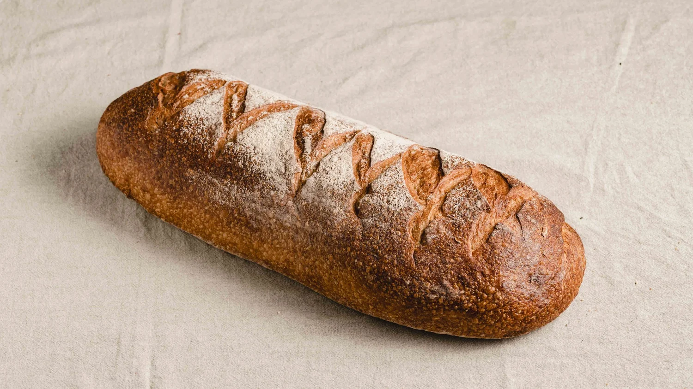
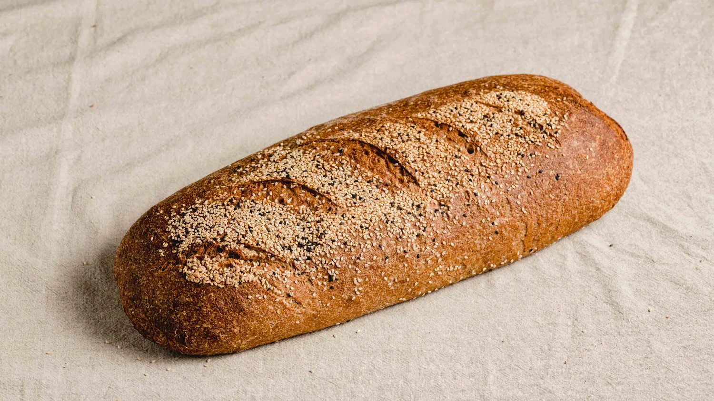
Een bakkerij, vernoemd naar een graankorrel.
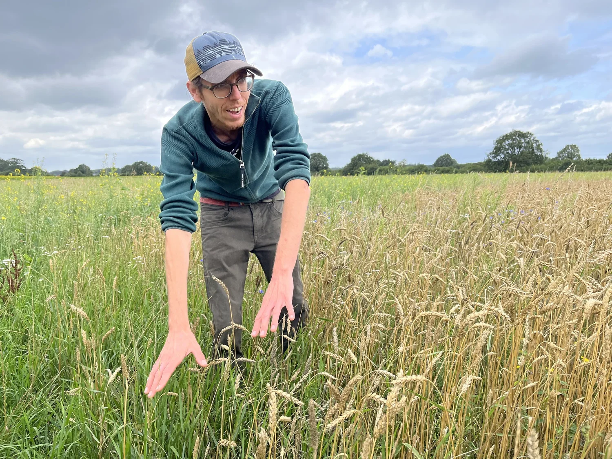
Lavett-tarwe is een goudgeel tarweras dat zich thuis voelt in het Nederlandse klimaat en ook nog eens heel smaakvol is. Deze korrel is de kiem van onze bakkerij, en daar hebben we onze naam vandaan.
Al ons graan komt uit Nederland, van regeneratieve akkers met ruimte voor akkerbloemen. Dat levert minder graan op, maar veel meer insecten, vlinders en bodemleven.
Ook de overige ingrediënten halen we zo mogelijk uit Nederland. Zo is ons brood pure desem van single-origin Nederlands meel.
Van wie we ons graan krijgen
- Boer Arjen van Landgoed Velhorst, vlakbij Zutphen.
- De Stormlopers-molen in de Noordoostpolder, voor ons meel.
- Jan van Graanbroeders komt wekelijks langs met versgemalen tarwe, spelt en rogge.
"Looking deeply into the piece of bread, I see the sunshine, the clouds, the great earth."
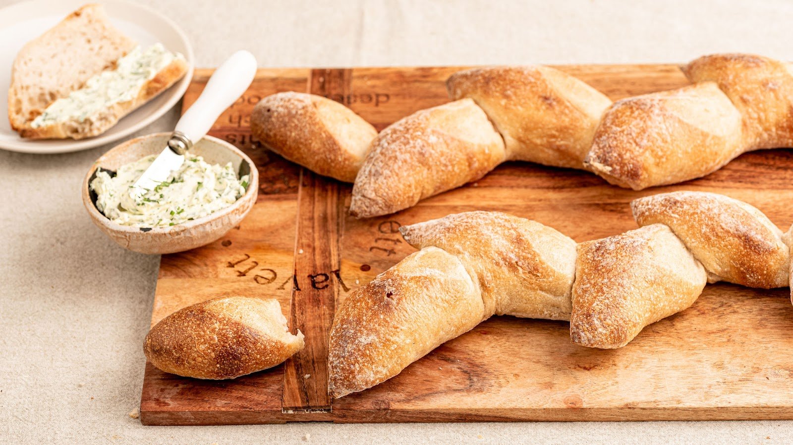
Ons brood op jouw kaart?
We zijn begonnen als bakkerij voor de horeca en brengen onze desembroden en rolls door heel Utrecht en omgeving rond, naar meer dan 20 restaurants.
We zijn een klein bedrijf en houden van een persoonlijke band. Daarom maken we veel op maat: een Duits roggebrood voor Koffie Leute, een Flower-bun voor bloemenwinkel Fiore.
Onze hardlopers zijn de kaneel- en kardemombroodjes, en onze viennoiserie is knapperig en heeft karakter. Klant worden? Bestellen doe je via Lokalist. Eerst proeven? Vraag een proefpakket aan.
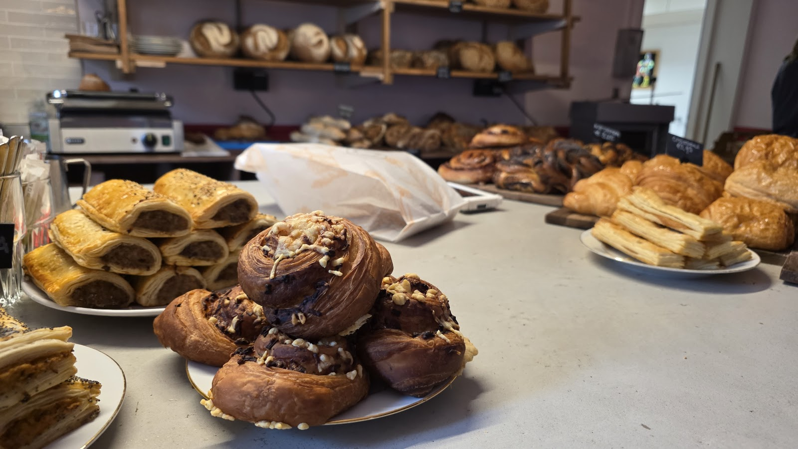